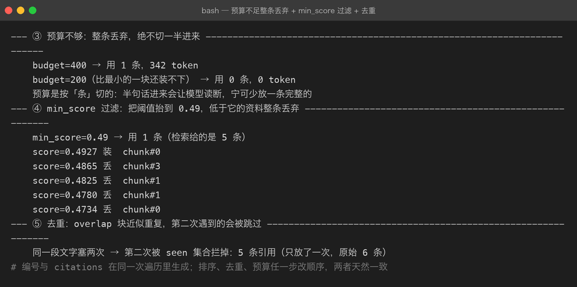
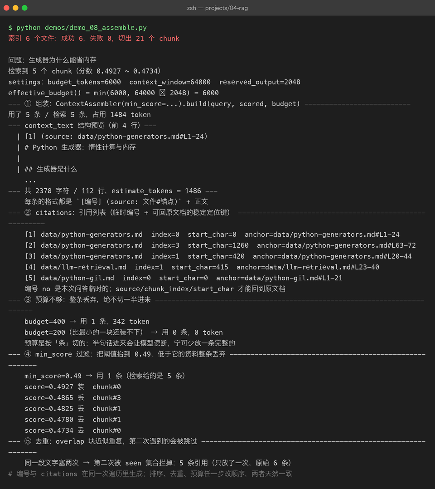

Project 04 — Chapter 08：Context Assembly【上下文组装】
状态：✅ 已成文（文档先行，作为 src/ 落地设计依据） 对应代码：
src/rag/assembly.py（代码落地时实现）
1. 本章要解决什么问题
Chapter 07 结束时，我们手里已经有了一批 rerank 后的高分 chunk：
scored: list[ScoredChunk] # 按 score 降序的 top_k 条很自然的想法是：把这几段文本直接拼起来塞进 prompt，让模型回答。
你以为： 检索到的资料直接给模型就行，剩下的交给模型自由发挥
实际上： 不带来源、不控预算、不管顺序的资料堆，会带来三个问题——
引用无法验证、prompt 超长报错、重要资料被模型"看漏"具体展开：
- 无法溯源。模型说「RAG 的全称是检索增强生成」，这句话出自哪份文档？没有来源标注，用户只能选择全信或全不信。幻觉就是在这个「无法验证」的缝隙里长出来的。
- 预算失控。top_k 是按条数截断的，不是按 token。5 条 chunk 每条 800 token，加上 system 和用户问题，很容易撞上上下文窗口（P03 Chapter 07 的教训）。
- 顺序随意。资料以什么顺序进 prompt，会直接影响模型的注意力分布（本章 3.3 讲 lost in the middle）。
本章目标：
把检索结果组装成「引用可溯源、顺序合理、预算不超」的上下文——这是检索结果进入模型前的最后一道工序。
2. 为什么需要这个知识
模型本身没有任何「引用」能力。你不给它带编号的资料，它就不可能输出 [1] 这样的标注；你给了编号，它才会学着用。
所以 RAG 的防幻觉链条是三段式的：
检索找对资料 → 组装时编号溯源 → system 规则约束模型只依据资料回答
(Ch05-07) (本章) (system prompt 承诺可验证性)其中第二段最容易被轻视，但它是用户信任的锚点：用户看到 [1] (source: docs/rag-guide.md#L12-40)，可以点开原文核对——可验证的回答才可信，哪怕它仍然可能是错的。
另一个原因是工程性的：上下文窗口是硬上限，而检索结果天然是「多多益善」的竞争性资源。必须有一个明确的装配规则来分配空间，而不是「能塞多少塞多少」。
Java 里写后端接口前会有一层 DTO 组装 / View 渲染——把 DAO 查出来的实体转换成带来源、带格式的前端需要的结构；Python 里这一层就是 ContextAssembler：检索层产出的是「原材料」，组装层产出的是「成品 prompt」，两层职责必须分开。
3. 核心概念
3.1 拼装格式：带编号的来源块
推荐的 context 文本格式：
[1] (source: docs/rag-guide.md#L12-40)
RAG（Retrieval-Augmented Generation）是一种先检索外部知识、
再交给大模型生成回答的技术……
[2] (source: docs/hallucination.md#L3-27)
幻觉指模型生成与事实不符的内容。常见诱因包括：训练数据缺失、
prompt 上下文不足……配套的 system 规则（每个 RAG 问答请求都带）：
你是知识库问答助手。请严格遵守：
1. 只依据下面的【参考资料】回答用户问题。
2. 引用资料时用编号标注，如 [1]、[2]。
3. 如果参考资料不足以回答问题，直接说「知识库中没有相关资料」，
不要使用你自己的知识，不要编造。三条规则缺一不可：第 1 条圈定信息来源，第 2 条要求输出可验证的引用，第 3 条定义「不知道」的行为。没有第 3 条，模型在资料不相关时依然会用自身知识「热心」作答——那正是幻觉的高发区。
关于 #L12-40 这个锚点：Chapter 02 定下的 Chunk metadata 里存的是 source（文档路径）、index（块序号）和 start_char（在原文档中的字符偏移）。行号是展示层格式——落地时由 start_char 换算出行号（或直接用字符偏移做锚点），目标是同一个：用户拿着引用能回到原文档的精确位置。
3.2 token 预算：分数截断，不是均匀截断
沿用 P03 Budget 的思路，先算出这次问答能给资料用多少空间：
总预算 = context_window - reserved_output - estimate_tokens(query) - estimate_tokens(system)然后按 chunk 的分数从高到低装入，装不下就停：
分数截断（正确）： [0.92][0.88][0.85][0.41] → 装到第 4 条超预算，丢弃第 4 条
均匀截断（错误）： 每条 chunk 按比例砍掉 30% → 每条都被拦腰斩断，全文皆碎均匀截断的问题在于：被砍的可能正是答案所在的 chunk。宁可少放一条完整的，也不要放四条残缺的——模型从半句话里猜答案，正是幻觉的温床。注意是「装不下就停」而不是「跳过继续装后面的」：分数是有序的，第 k+1 条不比第 k 条更值得装（若已启用 MMR，跳装可保留多样性，属于可选优化）。

3.3 引用位置还原：citations 是回答的一部分
组装时给每条资料分配编号 [1] [2] [3]，回答结束后把模型输出中的 [n] 映射回原文档位置：
模型回答：「RAG 是检索增强生成 [1]，它依赖文档切分质量 [3]。」
↓
citations = [
Citation(no=1, source="docs/rag-guide.md", chunk_index=4, start_char=1204),
Citation(no=3, source="docs/chunking.md", chunk_index=11, start_char=8800),
]前端拿这个列表渲染出可点击的引用，点 [1] 跳到 rag-guide.md 对应位置。
结构设计上有个取舍：[n] 编号是本次请求临时分配的，同一份文档在两次提问里编号会不同。所以 Citation 里同时存了稳定键（source + chunk_index + start_char）和临时编号（no）——持久定位靠稳定键，回答里的 [n] 靠 no 对上。Java 里这就像 REST 响应同时带业务键和展示序号，持久化永远用业务键。

4. 动手实现（设计稿）
以下代码将在 src/rag/assembly.py 落地，这里先当设计稿读。
"""Context Assembly：把检索结果组装成可溯源、预算可控的 prompt 资料。"""
from dataclasses import dataclass
from assistant.tokens import estimate_tokens # 复用 P03 的 token 估算
from rag.chunker import Chunk
from rag.vector_store import ScoredChunk # Chapter 04/05 的检索产物
@dataclass(frozen=True)
class Citation:
no: int # [1] [2]，本次请求内的临时编号
source: str # 稳定键：文档路径
chunk_index: int # 稳定键：块序号（chunk.index）
start_char: int # 稳定键：在原文档中的字符偏移
@dataclass(frozen=True)
class AssembledContext:
context_text: str
used_chunks: list[ScoredChunk]
citations: list[Citation] # citations[i].no == i + 1
context_tokens: int # 估算，用于日志与预算核对
RAG_SYSTEM_RULES = (
"你是知识库问答助手。请严格遵守：\n"
"1. 只依据下面的【参考资料】回答用户问题。\n"
"2. 引用资料时用编号标注，如 [1]、[2]。\n"
"3. 如果参考资料不足以回答问题，直接说「知识库中没有相关资料」，"
"不要使用你自己的知识，不要编造。\n"
)
class ContextAssembler:
def __init__(self, min_score: float = 0.2) -> None:
# 分数低于阈值的资料视为噪声，装进去只会稀释注意力
self._min_score = min_score
def build(
self,
query: str,
scored_chunks: list[ScoredChunk],
budget: int,
) -> AssembledContext:
budget -= estimate_tokens(query) + estimate_tokens(RAG_SYSTEM_RULES)
used: list[ScoredChunk] = []
citations: list[Citation] = []
blocks: list[str] = []
seen: set[str] = set() # 按内容去重
total = 0
for sc in sorted(scored_chunks, key=lambda s: s.score, reverse=True):
if sc.score < self._min_score:
break
key = sc.chunk.text.strip()
if key in seen: # overlap 造成的近似重复
continue
seen.add(key)
block = self._format_block(no=len(used) + 1, chunk=sc.chunk)
cost = estimate_tokens(block) + 1
if total + cost > budget: # 分数截断：装不下就停
break
used.append(sc)
citations.append(self._to_citation(no=len(used) + 1, chunk=sc.chunk))
blocks.append(block)
total += cost
context_text = "\n\n".join(blocks)
return AssembledContext(
context_text=context_text,
used_chunks=used,
citations=citations,
context_tokens=total,
)
def _format_block(self, no: int, chunk: Chunk) -> str:
meta = chunk.metadata
source = meta.get("source", "unknown")
start = meta.get("start_char", 0)
end = start + len(chunk.text)
# 展示层锚点用字符偏移；需要 #L12-40 形式时由 start_char 换算行号
return f"[{no}] (source: {source}#char-{start}-{end})\n{chunk.text}"
@staticmethod
def _to_citation(no: int, chunk: Chunk) -> Citation:
meta = chunk.metadata
return Citation(
no=no,
source=meta.get("source", "unknown"),
chunk_index=chunk.index,
start_char=meta.get("start_char", 0),
)调用方（Chapter 09 的 RAGService）这样用它：
assembler = ContextAssembler()
ctx = assembler.build(query, scored_chunks, budget=60_000)
messages = [
{"role": "system", "content": RAG_SYSTEM_RULES + "【参考资料】\n" + ctx.context_text},
{"role": "user", "content": query},
]两个设计要点：
budget由调用方传入而不是 assembler 自算。窗口多大、给输出留多少，是配置层（Chapter 09 的 Settings）的事，组装层只负责「在给定空间内装最优的」——和 Java 里方法不读全局配置、依赖由构造器注入是同一个道理。AssembledContext同时携带 context_text 和 citations，且编号分配与 citations 生成在同一次遍历里完成。排序、去重、预算截断任何一个环节改变顺序时，两者天然保持一致（见坑 4）。
5. 踩坑清单
坑 1：重复 chunk 白白烧预算
现象： top_k=5 里有两段几乎一样的文字，一条重要资料被挤出预算
原因： 相邻 chunk 有 overlap（Chapter 02），同一段话被切进两个块；
MMR 去重的是「向量相近」，不保证文本不重复
做法： 组装前按内容（strip 后的文本）做最后一级去重；
Chapter 02 的坑 4 也说过这件事——去重时机在检索后、组装时坑 2：中英文字符 token 比例估偏
现象： 按「字符数 / 4」估算预算，中文文档装进去后 prompt 超长报 400
原因： 英文 1 token ≈ 4 字符，中文 1 字 ≈ 0.6~1.5 token，
比例差 4 倍以上（P03 Chapter 07 已踩过一次）
做法： 用区分中英文的 estimate_tokens() 做预算决策；
计费对账才用响应里的 usage坑 3：lost in the middle——资料顺序影响注意力
现象： 明明第 3 条资料里有答案，模型却回答「资料中没有提到」
原因： 模型对超长上下文的注意力呈 U 形：开头和结尾记得牢，
中间容易被忽略（lost in the middle 现象）
做法： 分数最高的资料放最前，次相关的放最后，低分放中间；
至少要意识到资料顺序不是无关紧要的细节坑 4：引用编号与实际来源错位
现象： 用户点 [2]，跳转到的文档段落和被引用的内容对不上
原因： 排序、去重、预算截断改变了资料的最终顺序，
citations 列表却按老顺序另行生成
做法： 编号分配与 citations 生成必须在同一次遍历里完成
（见设计稿：used/citations/blocks 一起 append），
绝不允许「先拼文本、后补列表」两步走6. 自检清单
- [ ] 能解释为什么检索结果不能直接拼给模型（溯源 / 预算 / 顺序三个维度）
- [ ] 知道总预算公式，并理解为什么是分数截断而不是均匀截断
- [ ]
ContextAssembler.build()产出AssembledContext，编号与 citations 同遍历生成 - [ ] system 规则包含「资料不足就拒答」，而不只是「依据资料回答」
- [ ] 拿一组带 overlap 的检索结果测过：重复 chunk 只占一次预算
- [ ] 能把模型回答中的
[n]还原回source + chunk_index + start_char
上一章：07-rerank.md 下一章：09-rag-pipeline.md —— 零件全齐了，是时候把 01-08 串成完整流水线。